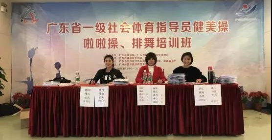
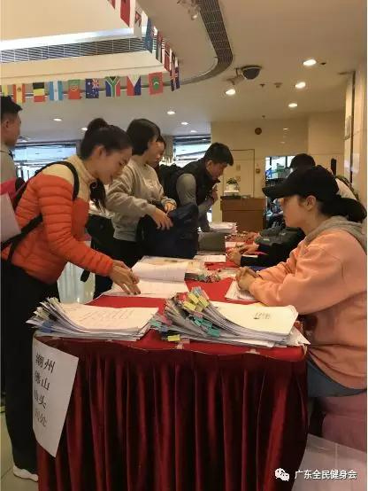
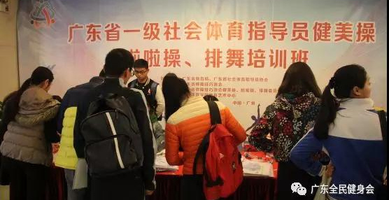

2018年1月14-16日，为贯彻落实《广东省群众体育工作方案》，进一步加大社会体育指导员培训工作力度，更好的提升和加强广东省社会体育指导员业务水平和服务质量，规范广东省社会指导员秩序和管理，由广东省体育局、广东省社会体育指导员协会指导；广东省体操技巧协会主办；广东省体操技巧协会健美操、啦啦操、排舞委员会承办；广州体育学院体育艺术中心协办的广东省一级社会体育指导员健美操、啦啦操、排舞培训班于广州景星酒店举行！
报到地点设在广州景星酒店大堂一楼。1月14日下午，来自于广东省深圳、珠海、东莞、肇庆、惠州、中山、韶关、潮州、汕头、佛山以及广州等地的培训学员已经陆续前来报到。


